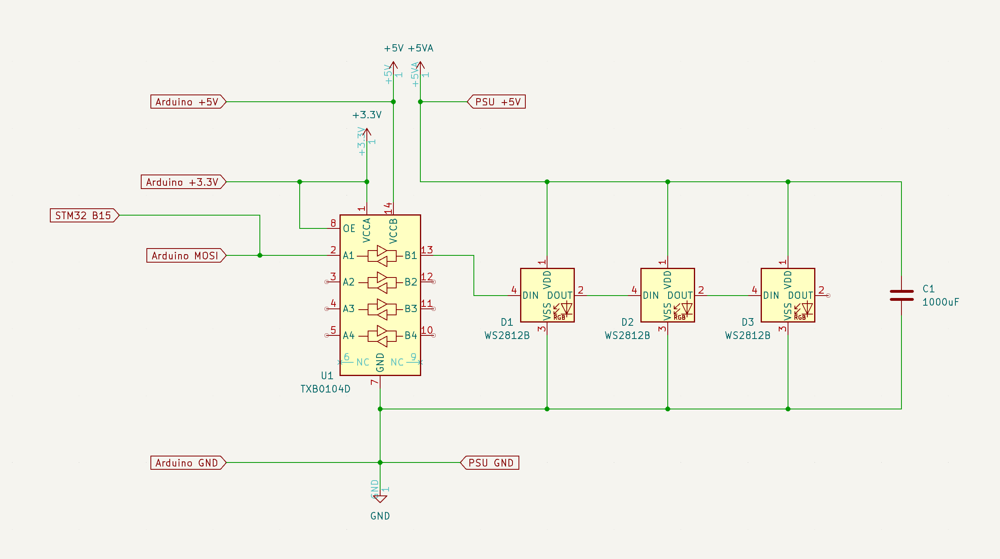

Article
Driving a NeoPixel LED strip on the STM32F746G-DISCO
Run a baremetal Swift program that drives a NeoPixel WS2812 LED strip from the STM32F746G-DISCO board’s SPI peripheral, using DMA.
Overview
This example demonstrates how to reconfigure the STM32F7’s PLL for a SPI clock rate that matches the WS2812 protocol’s bit timing, then use the SPI2 peripheral together with DMA to shift out pixel data without blocking the CPU. It requires additional hardware beyond the discovery board: a 3.3V-to-5V level shifter (such as the TI TXB0104), a NeoPixel WS2812 or compatible LED strip, a breadboard, and a 5V power supply.
Connect the components as shown in this schematic. A capacitor across the LED strip’s power supply is recommended:

The Application entry point reconfigures the PLL, enables the SPI2 and DMA1 peripherals, then drives an animated rainbow pattern across the strip using the SPINeoPixel driver:
import STM32F7X6
import Support
@main
public struct Application {
public static func main() {
// ... clock, PLL, and GPIO configuration ...
print("Hello Swift!")
var neoPixel = SPINeoPixel(dma: dma1, spi: spi2, pixelCount: 60)
while true {
neoPixel.rainbow()
neoPixel.draw()
}
}
}
Install dependencies
Install the stlink command line tools, for example with brew install stlink.
Install Swift
Follow the instructions in Installing Embedded Swift to install the latest Swift development snapshot with Embedded Swift support. Confirm the installation by running swift --version — it reports a “6.2-dev” or newer development snapshot.
Build the project
Navigate to the example directory and build it:
$ cd stm32-neopixel
$ make
Run on a device
Wire up the level shifter and LED strip according to the schematic above. Connect the STM32F746G-DISCO board to your Mac using the ST-LINK USB port. Flash the firmware:
$ st-flash --reset write .build/armv7em-apple-none-macho/release/Application.bin 0x08000000
The LED strip lights up and slowly animates a color gradient.
See Also
STM32 examples
Blinking an LED on the STM32F746G-DISCO
Run a baremetal Swift MMIO program that blinks an LED on the STM32F746G-DISCO board, with no vendor SDKs or external toolchains.
Echoing UART input on the STM32F746G-DISCO
Run a baremetal Swift program that echoes UART1 input on the STM32F746G-DISCO board, with no vendor SDKs or external toolchains.
Animating a Swift logo on the STM32F746G-DISCO’s LCD
Run a baremetal Swift program that drives the STM32F746G-DISCO’s onboard LCD panel, animating a bouncing Swift logo on a fading background.
Running LVGL on the STM32F746G-DISCO
Run a full graphical Swift firmware on the STM32F746G-DISCO board, driving an LVGL user interface on the onboard LCD with touch input.